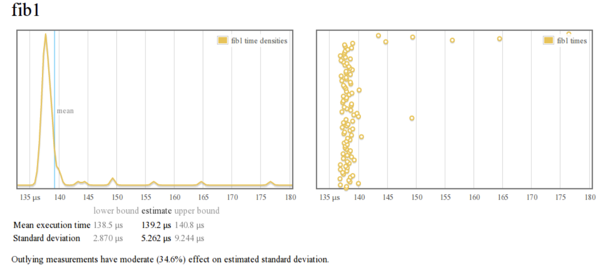

原文
与许多错误信息相反，Haskell中的单元测试非常常见和健壮。尽管一般来说，单元测试在Haskell中的重要性较低，因为类型系统使得大量的无效程序在构造时完全无法表达。intermediate plumbing(中间管道)。
关于Haskell库设计的著名思想流派倾向于围绕以强大的方程定律为基础构建的程序，这些定律可保证在组合下程序行为具有强大的不变性。许多测试工具都是围绕这种设计风格构建的。
QuickCheck QuickCheck可能是最著名的Haskell库，它是一个测试框架，用于根据参数的类型自动为任意函数生成大型随机测试:
1 2 3 4 5 6 7 8 9 10 11 12 13 14 15 16 17 18 19 20 21 22 23 24 25 quickCheck :: Testable prop => prop -> IO ()(==>) :: Testable prop => Bool -> prop -> Property forAll :: (Show a, Testable prop) => Gen a -> (a -> prop) -> Property choose :: Random a => (a, a) -> Gen aimport Test.QuickCheckqsort :: [Int ] -> [Int ]qsort [] = []qsort (x:xs) = qsort lhs ++ [x] ++ qsort rhs where lhs = filter (< x) xs rhs = filter (>= x) xs prop_maximum :: [Int ] -> Property prop_maximum xs = not (null xs) ==> last (qsort xs) == maximum xs main :: IO ()main = quickCheck prop_maximum$ runhaskell qcheck.hs *** Failed ! Falsifiable (after 3 tests and 4 shrinks): [0 ] [1 ] $ runhaskell qcheck.hs +++ OK , passed 1000 tests.
可以使用自定义类型扩展测试数据生成器，并使用限制要测试案例范围的谓词来完善测试数据生成器:1 2 3 4 5 6 7 8 9 10 11 12 13 14 15 import Test.QuickCheckdata Color = Red | Green | Blue deriving Show instance Arbitrary Color where arbitrary = do n <- choose (0 ,2 ) :: Gen Int return $ case n of 0 -> Red 1 -> Green 2 -> Blue example1 :: IO [Color ]example1 = sample' arbitrary
請看:
SmallCheck 与QuickCheck一样，SmallCheck是一个属性测试系统，但它不会生成随机的任意测试数据，而是枚举确定性的一系列测试数据到固定深度。
1 2 3 4 5 6 7 8 9 10 11 smallCheck :: Testable IO a => Depth -> a -> IO ()list :: Depth -> Series Identity a -> [a]sample' :: Gen a -> IO [a]λ: list 3 series :: [Int ] [0 ,1 ,-1 ,2 ,-2 ,3 ,-3 ] λ: list 3 series :: [Double ] [0.0 ,1.0 ,-1.0 ,2.0 ,0.5 ,-2.0 ,4.0 ,0.25 ,-0.5 ,-4.0 ,-0.25 ] λ: list 3 series :: [(Int , String )] [(0 ,"" ),(1 ,"" ),(0 ,"a" ),(-1 ,"" ),(0 ,"b" ),(1 ,"a" ),(2 ,"" ),(1 ,"b" ),(-1 ,"a" ),(-2 ,"" ),(-1 ,"b" ),(2 ,"a" ),(-2 ,"a"
在一个程序的所有可能的输入上生成测试用例，直到一定深度是很有用的。
1 2 3 4 5 6 7 8 9 10 11 12 13 14 15 16 17 18 19 20 21 22 23 24 25 26 27 28 29 30 31 32 33 34 35 import Test.SmallCheckdistrib :: Int -> Int -> Int -> Bool distrib a b c = a * (b + c) == a * b + a * ccauchy :: [Double ] -> [Double ] -> Bool cauchy xs ys = (abs (dot xs ys))^2 <= (dot xs xs) * (dot ys ys)failure :: [Double ] -> [Double ] -> Bool failure xs ys = abs (dot xs ys) <= (dot xs xs) * (dot ys ys)dot :: Num a => [a] -> [a] -> adot xs ys = sum (zipWith (*) xs ys)main :: IO ()main = do putStrLn "Testing distributivity..." smallCheck 25 distrib putStrLn "Testing Cauchy-Schwarz..." smallCheck 4 cauchy putStrLn "Testing invalid Cauchy-Schwarz..." smallCheck 4 failure $ runhaskell smallcheck.hs Testing distributivity...Completed 132651 tests without failure.Testing Cauchy -Schwarz ...Completed 27556 tests without failure.Testing invalid Cauchy -Schwarz ...Failed test no. 349. there exist [1.0 ] [0.5 ] such that condition is false
就像QuickCheck一样，我们可以为我們的自定义数据类型实现series(系列)实例。 例如，Vector没有默认实例，因此让我们实现一个实例:
1 2 3 4 5 6 7 8 9 10 11 12 13 14 15 16 17 18 19 20 {-# LANGUAGE FlexibleInstances #-} {-# LANGUAGE MultiParamTypeClasses #-} import Test.SmallCheckimport Test.SmallCheck.Seriesimport Control.Applicativeimport qualified Data.Vector as Vdot :: Num a => V .Vector a -> V .Vector a -> adot xs ys = V .sum (V .zipWith (*) xs ys)cauchy :: V .Vector Double -> V .Vector Double -> Bool cauchy xs ys = (abs (dot xs ys))^2 <= (dot xs xs) * (dot ys ys)instance (Serial m a , Monad m ) => Serial m (V .Vector a ) where series = V .fromList <$> series main :: IO ()main = smallCheck 4 cauchy
SmallCheck也可以使用泛型来派生Serial实例，例如，枚举一定深度的所有树，我们可以使用:
1 2 3 4 5 6 7 8 9 10 11 12 13 14 15 16 {-# LANGUAGE FlexibleInstances #-} {-# LANGUAGE MultiParamTypeClasses #-} {-# LANGUAGE DeriveGeneric #-} import GHC.Genericsimport Test.SmallCheck.Seriesdata Tree a = Null | Fork (Tree a ) a (Tree a ) deriving (Show , Generic ) instance Serial m a => Serial m (Tree a )example :: [Tree ()] example = list 3 series main = print example
QuickSpec 使用QuickCheck任意机制，我们还可以显着地列举大量函數组合，以尝试从small cases(小情况)下尝试输入来推导代数定律。
当然，这种方法的基本局限性在于，对于小情况或简单的函数组合，函数可能不会表现出任何令人感兴趣的特性。 因此，在一般情况下，这种方法将行不通，但实际上它仍然非常有用。
1 2 3 4 5 6 7 8 9 10 11 12 13 14 15 16 17 18 19 20 21 22 23 24 25 26 27 28 29 30 31 32 33 34 35 36 37 38 39 40 41 42 43 44 45 46 47 48 49 50 51 {-# LANGUAGE TypeOperators #-} {-# LANGUAGE ConstraintKinds #-} {-# LANGUAGE ScopedTypeVariables #-} import Data.Listimport Data.Typeableimport Test.QuickSpec hiding (lists , bools , arith )import Test.QuickChecktype Var k a = (Typeable a , Arbitrary a , CoArbitrary a , k a )listCons :: forall a. Var Ord a => a -> Sig listCons a = background [ "[]" `fun0` ([] :: [a]), ":" `fun2` ((:) :: a -> [a] -> [a]) ] lists :: forall a. Var Ord a => a -> [Sig ]lists a = [ funs', funvars', vars', listCons a, "sort" `fun1` (sort :: [a] -> [a]), "map" `fun2` (map :: (a -> a) -> [a] -> [a]), "id" `fun1` (id :: [a] -> [a]), "reverse" `fun1` (reverse :: [a] -> [a]), "minimum" `fun1` (minimum :: [a] -> a), "length" `fun1` (length :: [a] -> Int ), "++" `fun2` ((++) :: [a] -> [a] -> [a]) ] where funs' = funs (undefined :: a) funvars' = vars ["f" , "g" , "h" ] (undefined :: a -> a) vars' = ["xs" , "ys" , "zs" ] `vars` (undefined :: [a]) tvar :: A tvar = undefinedmain :: IO ()main = quickSpec (lists tvar)
运行这个我们更愿意看到它能够推导出列表函数的大多数定律:
1 2 3 4 5 6 7 8 9 10 11 12 13 14 15 16 17 18 19 20 21 22 23 24 25 26 27 28 29 30 31 32 33 34 35 36 37 38 39 40 41 42 43 44 45 46 47 48 49 50 51 52 53 54 55 56 57 58 59 60 61 62 63 64 65 66 67 68 69 $ runhaskell src/quickspec.hs == API == map :: (A -> A ) -> [A ] -> [A ]minimum :: [A ] -> A (++) :: [A ] -> [A ] -> [A ] length :: [A ] -> Int sort , id, reverse :: [A ] -> [A ]id :: A -> A (:) :: A -> [A ] -> [A ] (.) :: (A -> A ) -> (A -> A ) -> A -> A [] :: [A ] f , g, h :: A -> A xs , ys, zs :: [A ]A -> A A == Testing == Depth 1 : 12 terms, 4 tests, 24 evaluations, 12 classes, 0 raw equations.Depth 2 : 80 terms, 500 tests, 18673 evaluations, 52 classes, 28 raw equations.Depth 3 : 1553 terms, 500 tests, 255056 evaluations, 1234 classes, 319 raw equations.319 raw equations; 1234 terms in universe.== Equations about map == 1 : map f [] == [] 2 : map id xs == xs 3 : map (f.g) xs == map f (map g xs) == Equations about minimum == 4 : minimum [] == undefined == Equations about (++) == 5 : xs++[] == xs 6 : []++xs == xs 7 : (xs++ys)++zs == xs++(ys++zs) == Equations about sort == 8 : sort [] == [] 9 : sort (sort xs) == sort xs == Equations about id == 10 : id xs == xs == Equations about reverse == 11 : reverse [] == [] 12 : reverse (reverse xs) == xs == Equations about several functions == 13 : minimum (xs++ys) == minimum (ys++xs) 14 : length (map f xs) == length xs 15 : length (xs++ys) == length (ys++xs) 16 : sort (xs++ys) == sort (ys++xs) 17 : map f (reverse xs) == reverse (map f xs) 18 : minimum (sort xs) == minimum xs 19 : minimum (reverse xs) == minimum xs 20 : minimum (xs++xs) == minimum xs 21 : length (sort xs) == length xs 22 : length (reverse xs) == length xs 23 : sort (reverse xs) == sort xs 24 : map f xs++map f ys == map f (xs++ys) 25 : reverse xs++reverse ys == reverse (ys++xs)
请记住一个相当显着的事实，那就是所有这些都是从类型中自动推导出的！
Criterion(标准) Criterion是一种具有统计意义的基准测试工具。
1 2 3 4 5 6 7 8 9 10 11 12 13 14 15 16 17 18 19 20 21 22 23 24 25 26 27 28 29 30 31 32 33 34 35 36 37 38 39 40 41 42 43 44 45 46 47 48 49 50 51 52 53 54 55 56 57 58 59 60 61 62 63 64 65 66 67 68 69 70 whnf :: (a -> b) -> a -> Pure nf :: NFData b => (a -> b) -> a -> Pure nfIO :: NFData a => IO a -> IO ()bench :: Benchmarkable b => String -> b -> Benchmark import Criterion.Mainimport Criterion.Configfib1 :: Int -> Int fib1 0 = 0 fib1 1 = 1 fib1 n = fib1 (n-1 ) + fib1 (n-2 )fib2 :: Int -> Int fib2 x = truncate $ ( 1 / sqrt 5 ) * ( phi ^ x - psi ^ x ) where phi = ( 1 + sqrt 5 ) / 2 psi = ( 1 - sqrt 5 ) / 2 suite :: [Benchmark ]suite = [ bgroup "naive" [ bench "fib 10" $ whnf fib1 5 , bench "fib 20" $ whnf fib1 10 ], bgroup "de moivre" [ bench "fib 10" $ whnf fib2 5 , bench "fib 20" $ whnf fib2 10 ] ] main :: IO ()main = defaultMain suite$ runhaskell criterion.hs warming upestimating clock resolution...mean is 2.349801 us (320001 iterations)found 1788 outliers among 319999 samples (0.6 %) 1373 (0.4 %) high severe estimating cost of a clock call...mean is 65.52118 ns (23 iterations)found 1 outliers among 23 samples (4.3 %) 1 (4.3 %) high severe benchmarking naive/fib 10 mean : 9.903067 us, lb 9.885143 us, ub 9.924404 us, ci 0.950 std dev: 100.4508 ns, lb 85.04638 ns, ub 123.1707 ns, ci 0.950 benchmarking naive/fib 20 mean : 120.7269 us, lb 120.5470 us, ub 120.9459 us, ci 0.950 std dev: 1.014556 us, lb 858.6037 ns, ub 1.296920 us, ci 0.950 benchmarking de moivre/fib 10 mean : 7.699219 us, lb 7.671107 us, ub 7.802116 us, ci 0.950 std dev: 247.3021 ns, lb 61.66586 ns, ub 572.1260 ns, ci 0.950 found 4 outliers among 100 samples (4.0 %) 2 (2.0 %) high mild 2 (2.0 %) high severe variance introduced by outliers: 27.726 %variance is moderately inflated by outliersbenchmarking de moivre/fib 20 mean : 8.082639 us, lb 8.018560 us, ub 8.350159 us, ci 0.950 std dev: 595.2161 ns, lb 77.46251 ns, ub 1.408784 us, ci 0.950 found 8 outliers among 100 samples (8.0 %) 4 (4.0 %) high mild 4 (4.0 %) high severe variance introduced by outliers: 67.628 %variance is severely inflated by outliers
Criterion还可以生成一个HTML页面，其中包含绘制的基准测试结果:
1 2 $ ghc -O2 $ ./criterion -o bench.html

Tasty Tasty将所有测试框架组合到一个通用API中，以形成可运行的批量测试并收集结果。
1 2 3 4 5 6 7 8 9 10 11 12 13 14 15 16 17 18 19 20 21 22 23 24 25 26 27 28 29 30 31 32 33 34 35 36 37 38 39 40 import Test.Tastyimport Test.Tasty.HUnitimport Test.Tasty.QuickCheckimport qualified Test.Tasty.SmallCheck as SCarith :: Integer -> Integer -> Property arith x y = (x > 0 ) && (y > 0 ) ==> (x+y)^2 > x^2 + y^2 negation :: Integer -> Bool negation x = abs (x^2 ) >= xsuite :: TestTree suite = testGroup "Test Suite" [ testGroup "Units" [ testCase "Equality" $ True @=? True , testCase "Assertion" $ assert $ (length [1 ,2 ,3 ]) == 3 ], testGroup "QuickCheck tests" [ testProperty "Quickcheck test" arith ], testGroup "SmallCheck tests" [ SC .testProperty "Negation" negation ] ] main :: IO ()main = defaultMain suite$ runhaskell TestSuite .hs Unit tests Units Equality : OK Assertion : OK QuickCheck tests Quickcheck test: OK +++ OK , passed 100 tests. SmallCheck tests Negation : OK 11 tests completed
silently 通常在测试IO heavy繁重代码的过程中，我们需要重定向stdout来比较一些已知的quantity(数量)。silent包允许我们捕获IO块内任何库中对stdout所做的任何操作，并将结果返回给测试运行程序.
1 2 3 4 5 6 7 8 9 10 11 12 13 14 15 16 17 18 19 20 21 capture :: IO a -> IO (String , a)import Test.Tastyimport Test.Tasty.HUnitimport System.IO.Silentlytest :: Int -> IO ()test n = print (n * n)testCapture n = do (stdout, result) <- capture (test n) assert (stdout == show (n*n) ++ "\n" ) suite :: TestTree suite = testGroup "Test Suite" [ testGroup "Units" [ testCase "Equality" $ testCapture 10 ] ] main :: IO ()main = defaultMain suite
赞赏
thank you